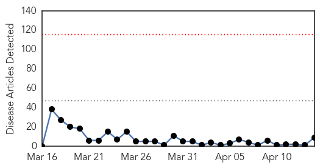
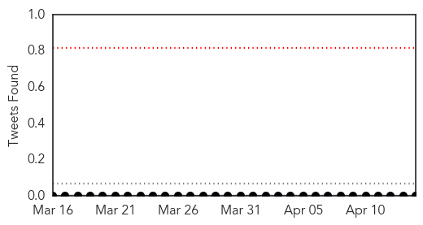
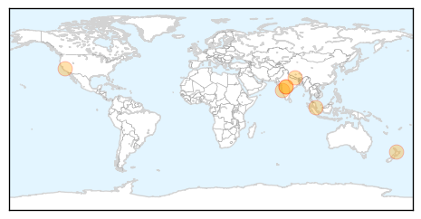

Swine Flu
30-Day Web Trend
0 alerts, 0 warnings

30-Day Twitter Trend
0 alerts, 0 warnings

Article Locations
Article Confidences

Top Articles:
- 1.000
- The Brief Blog Archive Swine Flu in Jajarkot
- 1.000
- Jajarkot samples test positive for Swine flu
- 0.999
- Swine flu claims three more lives in state, 35 fresh cases reported
- 0.997
- Sargodha resident dies of swine flu
- 0.988
- Suspected swine flu patient dies in Lahore
- 0.972
- Maine National Town Hall Debate on Vaccines
- 0.955
- Call for pregnant women to get flu jabs
- 0.926
- H1N1 infection in the country still under control, says Dr Subramaniam
- 0.690
- School’s H1N1 Facebook posting spook parents
Top Tweets:
-
No tweets found for Apr 14, 2015
Yellow Fever
30-Day Web Trend
1 alerts, 0 warnings

30-Day Twitter Trend
0 alerts, 0 warnings

Article Locations

Article Confidences

Top Articles:
-
No articles found for Apr 14, 2015
Top Tweets:
-
No tweets found for Apr 14, 2015